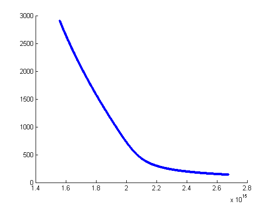

function QNMplot
clc; clear all; close all;
e0=1/(36*pi)*1e-9;
c=2.98e8;
n=1.5;
f_m=0;
w_m=2.04574343894687e+15 + 104487640465493i;
r0=10e-9;
J=@(r, r0) [0 ; 0; r==r0];
magJ=@(r, r0) norm(J(r, r0));
Enorm=[-3.148572033973699e+12 - 1.158419038423001e+13i;
-2.338225251700153e+12 - 7.860856063131686e+12i;
-7.733414853010841e+15 + 1.522831542482067e+14i];
int=dot(J(r0,r0),Enorm);
Psi_s=[1.711724820219455e+19 - 5.980152230605488e+18i;
1.159398322778564e+19 - 4.361859126712599e+18i;
-1.054813433060611e+21 - 1.163527675657386e+22i];
a=@(w) (i*int*r0^3)/(w-w_m)+f_m;
Psi_qnm= @(w) (sqrt((w_m-w)/(-i*dot(J(r0,r0),Psi_s))))*Psi_s;
factor1=@(w) (-6*pi*e0*c*c*c)./((w.*w)*n*1);
factor2= @(w) real(dot(conj(J(r0,r0)),Psi_qnm(w)));
P=@(w) factor1(w).*factor2(w);
for w=2.6748e+15:-1114500000000: 1.5603e+15
hold on
figure(1)
plot(w,P(w),'.')
end
hold off
end
